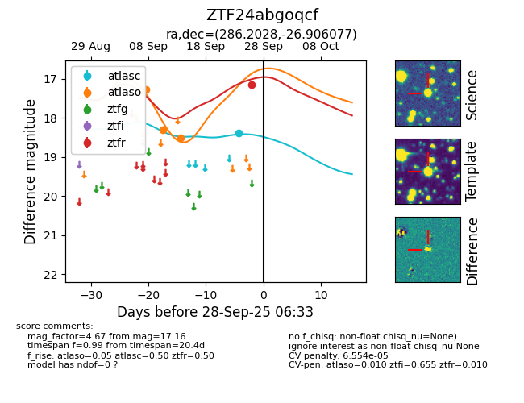
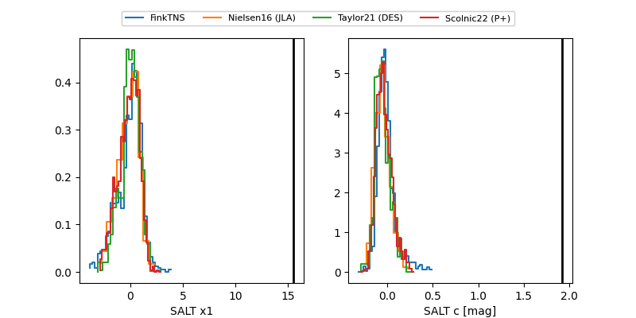

FINK: ZTF24abgoqcf
Lasair: ZTF24abgoqcf
ALeRCE: ZTF24abgoqcf
ZTF24abgoqcf (ztf,fink)
equatorial (ra, dec) = (286.2028,-26.90608)
galactic (l, b) = (9.8692,-14.63325)


last atlasc=18.38, atlaso=18.51, ztfr=17.16
1 atlasc, 3 atlaso, 1 ztfr detections